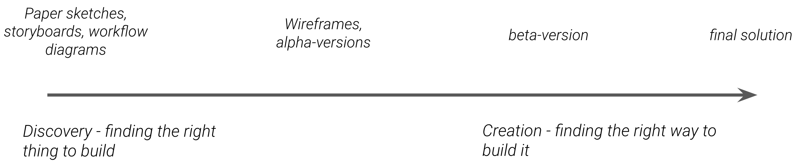

Prototyping
Prototyping involves developing artifact(s) that help in exploring one or several dimensions of a potential solution and is used to communicate, discuss, and evaluate ideas and concrete solutions within the design team and with other stakeholders. The form and content of a prototype is thus developed based on what is to be communicated, evaluated and discussed and helps in concretizing ideas.
Low and high-fidelity prototypes
Prototypes may range from low-fidelity to high-fidelity depending on how close the prototype is to a working solution.
To make prototyping efficient, one should seek to use the least time consuming and resource-intensive form of prototyping
which effectively can be used to explore the relevant dimension. For instance, if exploring the appropriate size of a physical
device to be worn by a health worker out in the field, it is more efficient to use pieces of wood with different sizes and
weights and evaluate these than to build a fully functioning digital device and later find out that it is too large or heavy.
Similarly, if exploring the rough concept around a web-based app, it is often preferable to develop a set of conceptual
sketches rather than implementing a fully functioning app to find out it represents a bad solution to the problem.
Also, some dimensions of a solution may be better evaluated in a naturalistic setting (in situations close to or similar to a
real situation) or in a controlled environment (e.g., a lab, a workshop, in a meeting).
Evolutionary prototyping
Prototypes of various kinds should be used throughout the design process beginning with prototypes for discovering the right solution to build or the right intervention (conceptual) and gradually moving to prototypes for exploring how to build the solution right (e.g., exploring details of functionalities, workflows, user interfaces). Prototyping is thus an evolutionary process where the prototype evolves with the project from initial ideas to a working solution.
Relevant techniques
- Paper Sketches
- Storyboards
- Wireframing
- Role play